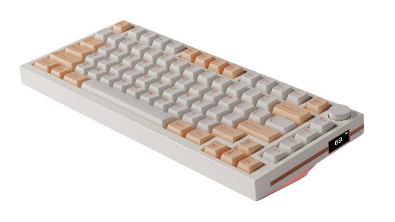

Now when it comes to the types of keyboards that are available , there is quite a bit to consider. First let's begin with the most imperative descision, the size of your keyboard.
To be frank, the size of your keyboard is entirely up to three factors: the spacing on your desk, the type of work you do, your price range.
Most people tend to opt for these most common keyboard types: A fullsize keyboard and a TKL (TenKeyLess) keyboard.
Now if you are unfamiliar with what those are, essentially, a fullsize keyboard is exactly how it sounds. A keyboard that has all your typical QWERTY keys, with arrow keys, functions keys, editing keys, and an additionbal number pad. A TKL on the other hand is basically the same as a fullsize, with the exception of a complete number pad. These two keyboards are usually the ones most people see as they are mass produced and are easily found in most work places. However, while they may sometimes be the cheapest keyboards available, they don't leave a lot of room on your desk for your mouse or other space.
However, as previously mentioned, there are much much more keyboard sizes to touch upon.
| Size: | Description: | Image: |
|---|---|---|
| Fullsize (100% ) | A fullsized keyboard that includes all alphabetical keys, arrow keys, function keys, editing keys, and a number pad. | |
| TKL (80%) | A keyboard that includes all of the same features as a full size, without the addition of a number pad. This is the most common base for keyboard customization. | |
| 75% Keyboard | A keybaord that has all the alphanumeric keys, the function keys, arrow keys, and a few editing keys. This is one of the most common bases for keyboard customization. |  |
| 65% Keyboard | A keyboard that includes alphanumeric keys, arrow keys, and a few editing keys. This often gets mistaken for a 75%, however, keep in mind that typically 75% still includes the function keys and are less compressed. | |
| 60% Keyboard | A keyboard that includes all alphanumeric keys, but no arrow keys, editing keys, function keys, or any extra keys. This type of keyboard is mainly utilized/prioritized for its small space use. |
Of course there are more outside of these sizes, however these are the ones that you are most likely to see within the market. Also the other sizes I haven't mentioned, such as 1800 Compact or 40%, are less likely to be produced and are more likely to be expensive for many average consumers. While this site may not list through every keyboard size known to man, it will go through the most common ones, and ensure that you get the size best for you.
In short though, here is the general ruling I use for determining what keybaord to purchase. Keep in mind this may not all apply to you, and your purchase is entirely up to you.
If you have a larger desk space or are someone who commonly uses number pads, a fullsize might be the most optimal option for you. However, if you are a just a gamer or programmer who uses a mouse and has a small desk space, you may opt for a TKL or 75%. And if you're a more casual gamer or you simply want something decentg to type on, a 75%, 65%, or even 60% keyboard will likely fulfil that duty.
Now outside of keyboard sizes, there are quite a few other options that need to be considered. I suggest you check out the rest of this site for that.
Or y'know click on the switches portion at the top nav bar :)